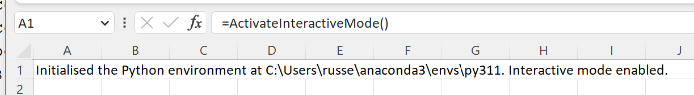
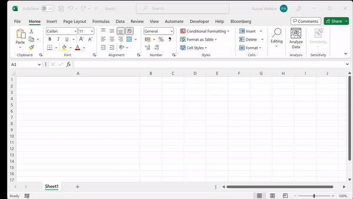

Interactive Mode¶
xlSlim’s interactive mode allows Excel to mimic Jupyter notebook behaviour with code stored and run within Excel. This is particularly useful for adhoc data analysis and rapid code development.
Interactive mode is activated by calling the ActivateInteractiveMode() function:
=ActivateInteractiveMode()
{kind=link}
Python code can now be run directly in Excel. Any cell beginning with “#py” is treated as Python code.
#py
import math
def area_circle(r:float)->float:
"""Calculates the area of a circle."""
return math.pi * r ** 2
radius = 15.0
print(f"Area {area_circle(radius)}")
Double-clicking on a cell opens the built-in Python code editor:
{kind=link}
Any functions or classes defined are automatically registered as Excel functions, for example:
=area_circle(15)
Classes and functions can be defined in one cell and used in another. The Person class and describe_person() function can be defined:
#py
from dataclasses import dataclass
@dataclass(frozen=True, repr=True)
class Person:
name: str
age: int
def describe_person(p:Person)->str:
return f"{p.name} is {p.age} years old."
{kind=link}
And then used in other cells:
#py
p = Person("Ed Sheeran",32)
print(p)
print(describe_person(p))
{kind=link}
Note
All the Python code and Excel files shown are available from github in the xlslim-code-samples repo. I highly recommend downloading the samples from github. The Excel workbooks contain many tips and tricks.
Keyboard Shortcuts¶
Interactive mode has keyboard shortcuts that are similar to the Jupyter notebook shortcuts.
| Keys | Action |
|---|---|
| Ctrl + Enter | Run the current cell |
| Shift + Enter | Run the current cell, move down one cell |
| Ctrl + R | Run all interactive cells |
| Alt + Enter | Useful to insert a new line if editing text within cells |
Accessing the Excel application¶
A special app() function is available in interactive mode. This function gives access to the Excel application.
#py
# Create a link to the cell B1
c = app().ActiveSheet.Range("B1")
{kind=link}
Variables defined in one cell are available to use in other cells. We can now manipulate the cell B1:
#py
c.Value = "Hello from xlSlim!"
c.Font.Bold = True
{kind=link}
Please take a look at the interactive_mode.xlsx file available from github in the xlslim-code-samples repo. The file contains many further examples showing how to create pandas dataframes from Excel, define async functions and much more.